Models - Distilling data to understand, predict and change the world
In our reading this week, you learn that in Jane Austen's time, it was valuable to be a "man of information." Today, everyone has a smart phone. The valuable skill today is to learn how to refine the world's most valuable resource--data--using the formal process of building models. For programming, focus on finishing our Twitter Colab Notebook on Sentiment Analysis and NER for Mini-Project #3.
Perhaps the most important thing to remember is the saying by George Box: "All models are wrong. Some models are useful." All models come with some degree of uncertainty, and the more complex the model, the greater the uncertainty: a change in a single variable can effect enormous change. Still, computational approaches allow us to run hundreds or even thousands of simulations. Though there may be outliers, more data means more probable outcomes. This week we'll focus on a few important model examples: climate change, COVID-19, the election, and human behavior (the evolution of trust). We'll explore REDCAPE--a multimodal way of thinking, and test predictions for the election. We'll also see if we can model changes in human behavior.
We end the week by new reflections on topics we've already discussed: when is it beneficial to withhold information from the public--in this case, dissenting opinions about our COVID-19 response? And what is the underlying structure of the universe? Is math our greatest invention--allowing us to predict outcomes and act in the world with agency? Or is it a discovery of the fundamental nature of reality?
- Monday: (IPHS Fall Break: Go vote, polls are open now!)
- Flipped Classroom: Models Video
- How FiveThirtyEight's 2020 Presidential Election Forecast Works and Whats Different Because of Covid-19, Nate Silver, Aug 2020
- Before the election on Tuesday, please take our anonymous survey to predict US Presidential Election Winner. We'll discuss this week when studying predictive modeling. Try to think logically and carefully about what data, common sense pragmatics and other bigger picture phenomena are informing your priors as well as what weight you give to each source/model. For example:
- Fivethirtyeight.com
- Poll aggregators
- UK Bookies
- The Vegas Betting Line
- The Economists Bayesian Model
- GoodJudgementProject
- Prediction markets like Predictit.org
- Tuesday/Wednesday: (The nature of models)
- The Golems of Science (models are like robots) (5:09-11:45) Richard McElreath Statistical Rethinking, Winter 2019
- The Model Thinker (only Chp 1 and 2, not 3 or 4), Scott Page, Basic Books, 2018 (Don't sweat the details--focus on the big picture of REDCAPE)
- The Evolution of Trust (should take no more than about 20mins) Be sure to read the footnotes to this simulation!
- Wednesday/Thursday: (Simulations, Surprising Outcomes and Cognitive Biases)
- Simulating an Epidemic (23:00) 3Blue1Brown, Mar 2020
- Monte Carlo Simulation 101 in 5 Minutes (5:00 - Just watch the video) David Musselwhite, RiskLens, Dec 2017
- Introduction to Climate Modeling (14:50) Climate Literacy, Feb 2014
- Adventures in Cognitive Biases (Bayesian Thinking)
- Thursday/Friday: (Theory, Reality and Healthy Skepticism)
- Why It's So Freaking Hard to Make a Good COVID-19 Model, Koerth, et. al, FiveThirtyEight.com, 31 Mar 2020
- Academic Freedom Questions Arise on Campus Over Covid-19 Strategy Conflicts, Kate Chesley, Stanford News, 30 Oct 2020
- Why Scientists Fear the 'toxic' Covid-19 Debate, New Scientists, Laurie Clark, 30 Oct 2020
- ML Practicum: Fairness in Perspective (6:25) Google Jigsaw, Dec 2019
- Mathematics and Reality, IB Maths Tok Essay, British International School, Phuket
In Class Demo
- Loopy Redesign Society and Self: Automation and Job Loss
- Research and rank model parameters that support your assigned candidate in the election today as well as critique model parameters that suggest the opposition candidate will win. Use both in-model and out-of-model factors.
- The Evolution of Trust (review/discussion in class this homework assignment) Simulate the following social situation in the Sandbox. Find (a) most realistic parameter settings for the model parameters i.Population, ii.Payoffs and iii.Rules as well as (b) the relative sensitivity of each. Consider i.Repeatability, ii.Miscommunication and iii.Zero-Sum Games vs Non-Zero-Sum Games
- 1. Social Media debate (miscommunication/zero-sum)
- 2. Kenyon Alumni Network participation (repeatability/non zero-sum)
- 3. Battlefield withdrawal (miscommunication/fog of war)
- 4. Running a financial Ponzi scheme (low repeatability/low-trust environment)
- Outbreak, Kevin Simler Mar 2020
- Covid SIR Simulations: NYTimes and Jupyter Notebook (jckantor)
- Why It's So Freaking Hard to Make a Good COVID-19 Model (Gather data to inform priors)
- Scientific Debate, Open Societies and Human Progress (cognitive biases and solutions)
- Math: Is it 'the' Ground Truth? Is it Discovered or Invented?
Quiz: Models Open Fri 2am PST to Sun 2am PST
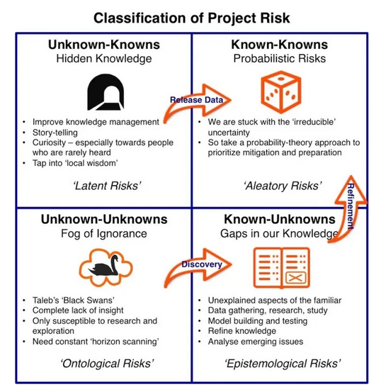
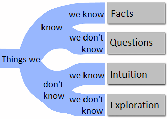
Quiz Topics:
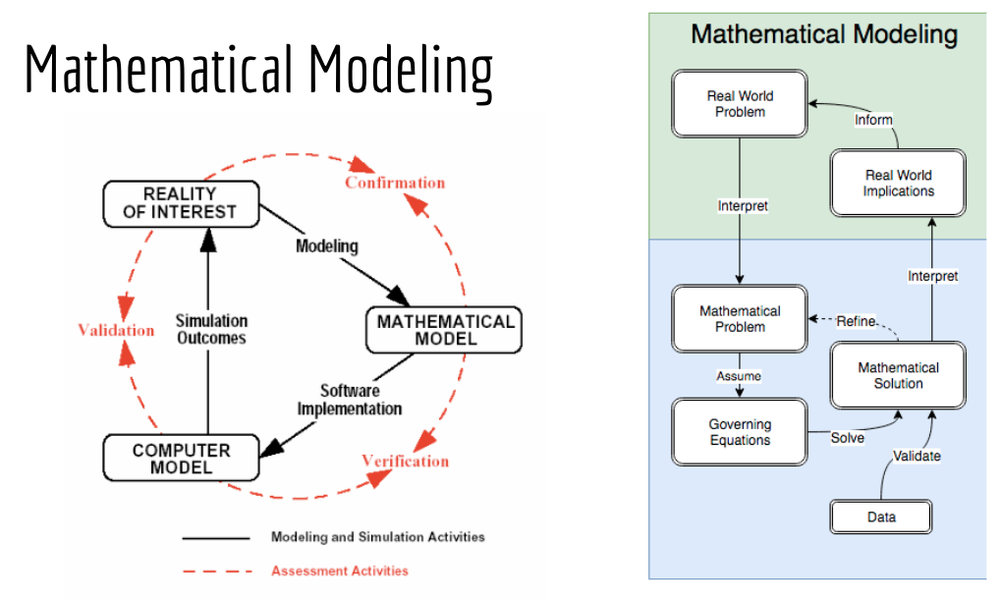
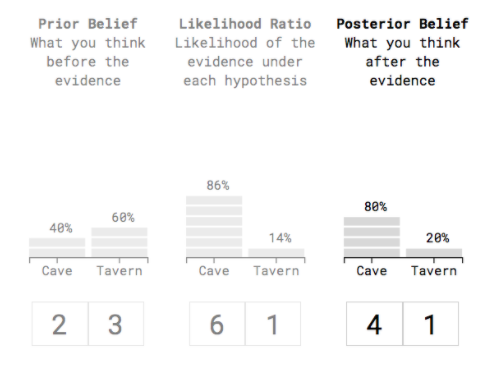
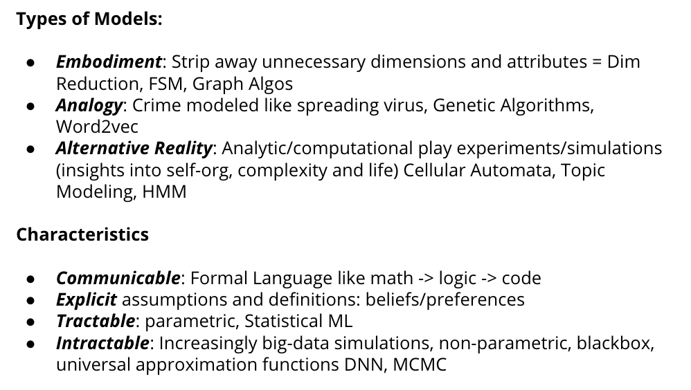
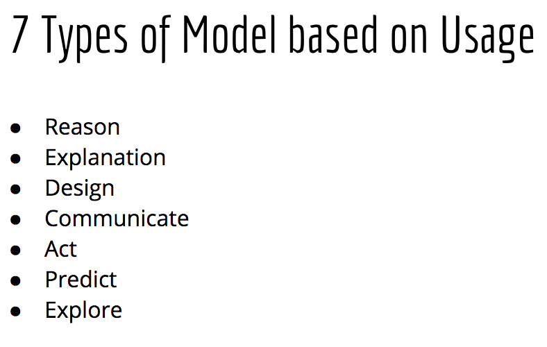


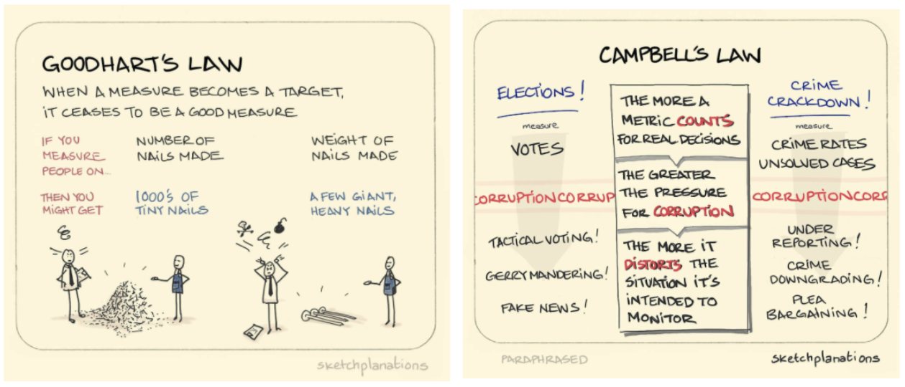
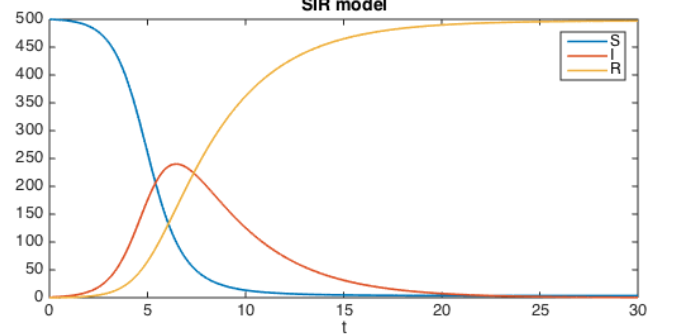
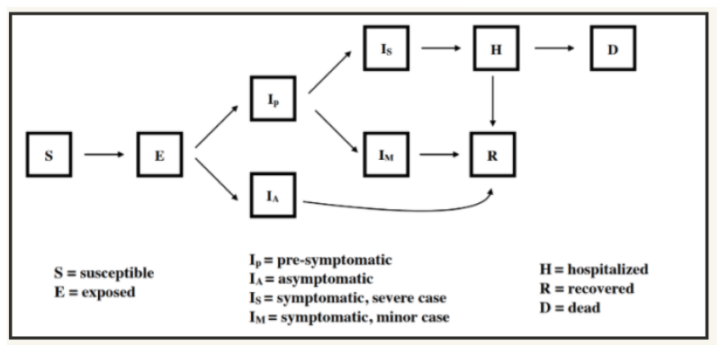
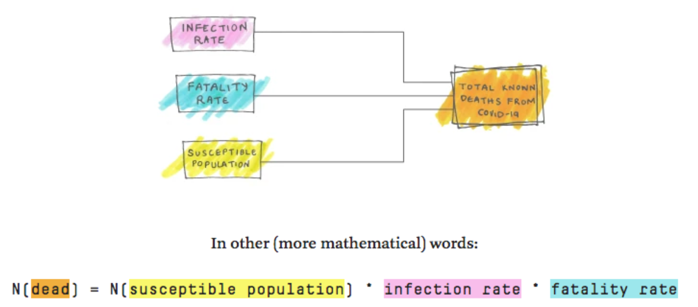
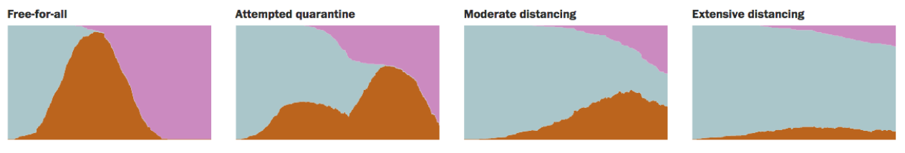
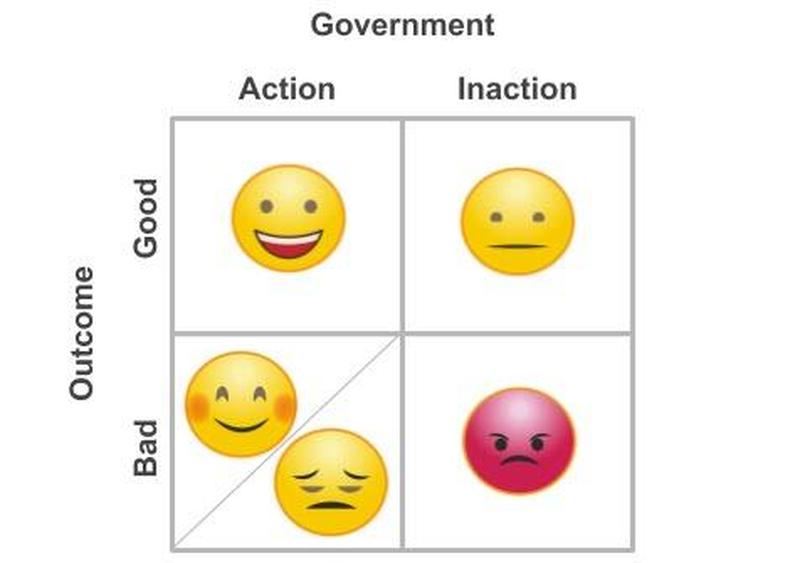